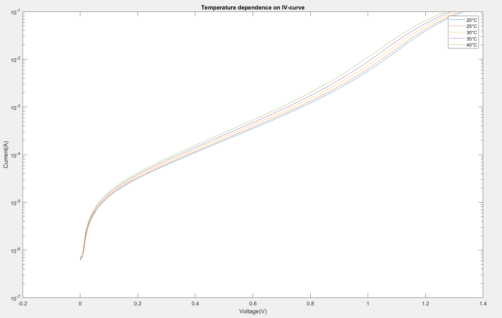
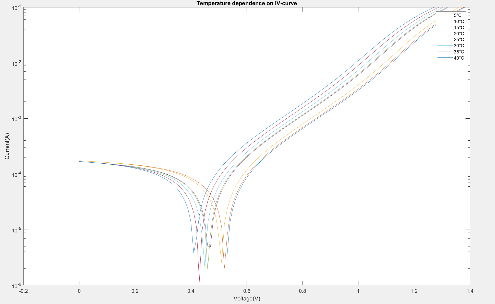
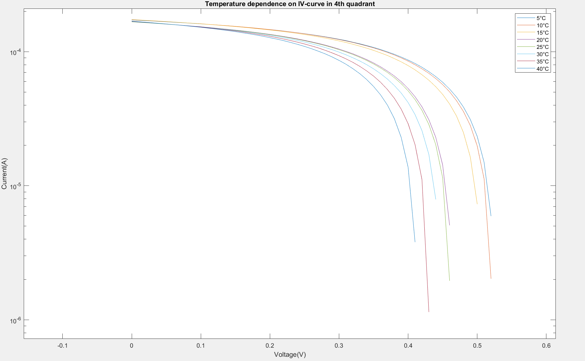
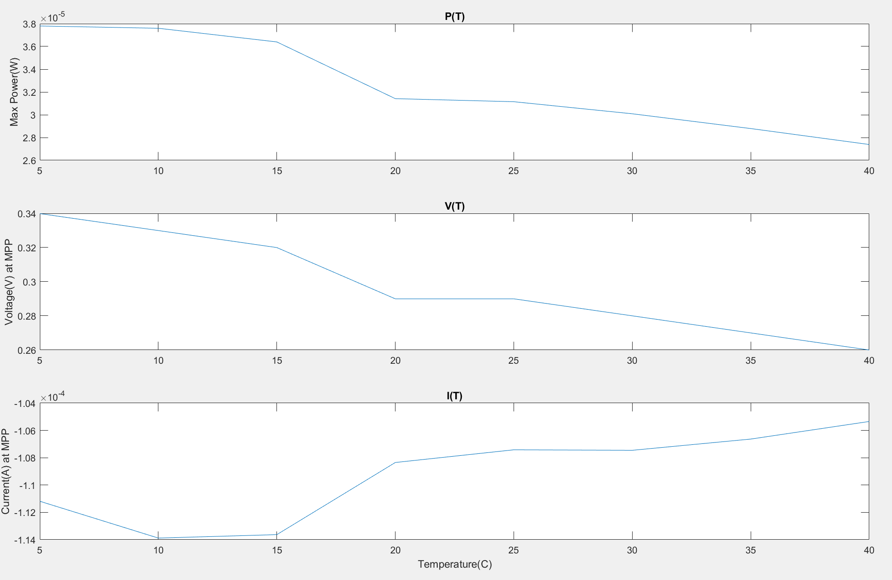
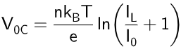
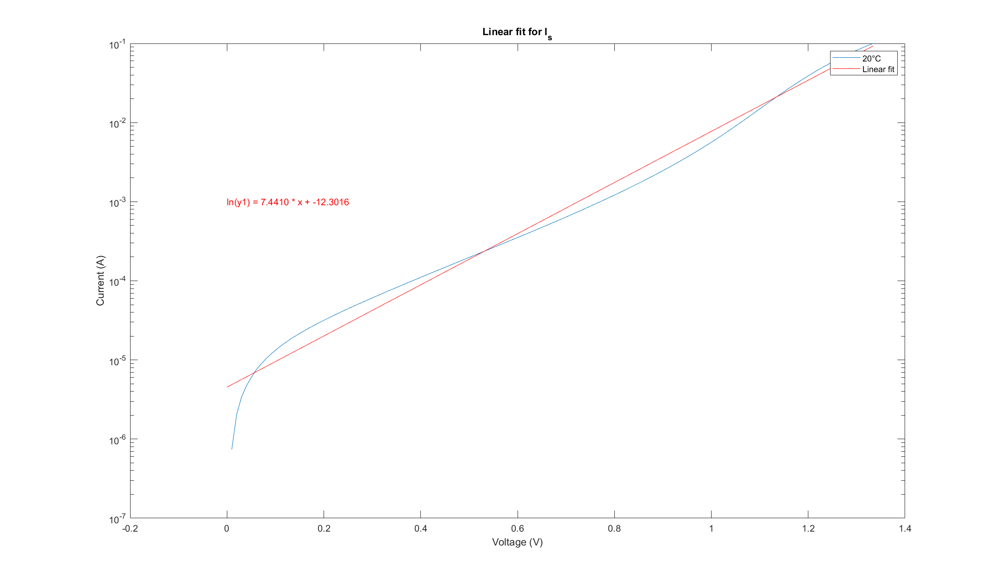
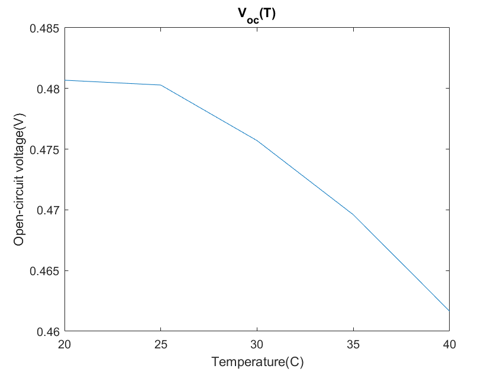

Measurement
Our study is expressly governed by the data obtained when the solar plate was introduced
into the climate chamber under conditions of exposure of light and darkness.
Then for each light exposure we study the temperature dependence.
No light exposure results
Once the solar cell is connected to the sourcemeter and introduced inside the climate chamber,
we convered the window of the chamber to simulate complete darkness.
Python script used for the plot.

IV-curve without light exposure
As we can see in our plot, there is no power production, this is because the solar cell relies on the absorption of photons (light) to generate
electron-hole pairs and create a voltage potential across the cell. So, as we don't have any photons to initiate the process, as a result no electro-hole
pairs are generated and therefore no voltage potential across the cell.
Light exposure results
This time we did not cover the climate chamber window, instead we placed a fixed light source in front of the climate chamber window. This source of light
was maintained over the time until the climate chamber reached 40ºC. So this time there are two different sources that are hitting the solar cell,
light and increasing temperature. Python script used for the plot.


IV-curve with light exposure; IV 4th quadrant graph
The results for the light exposed solar cell is that the maximum power decreases with temperature, as is shown in the plot below. It also shows that the voltage at the maximum power point decreases whereas the current stays almost constant. As a result of the light exposure and the temperature increase in a reverse bias condition, the photocurrent becomes the dominant current source
The offset created by the photocurrent pushes the I-V characteristic of the cell into the fourth quadrant, meaning that for positive voltages,
the current sign is negative, thus the solar cell is producing power, and this only happens in the 4th quadrant.
We have obtained three different values for each temperature and with a fixed light source over the solar cell: the short-circuit current,
Isc (where V=0), the open circuit voltage, V0C (where I=0), and the point where the cell produces maximal power.
From the figure above we have obtained all these values for different temperatures and we have represented them graphically
with the corresponding temperature values to see how they respond to a temperature increase in the plot below.

Max Power, P, Current, I, Voltage, V, obtaines values through the temperature variation with light exposure
The solar cell is producing energy since the product of current and voltage is negative. The maximum power generated is reduced as the temperature increases,
this is due to the temperature dependence of the reverse saturation current (
I0) in the diode equation which is exponential
with temperature. As the temperature increases, I
0 also increases. The increase in the reverse saturation current contributes to a higher
reverse saturation current in the solar cell, even in the absence of light. In consequence, the open-circuit voltage will be reduced, which is a key factor
in determining the maximum power output.
Discussion
The maximum power of the solar cell decreases with temperature. By studying the IV 4th quadrant graph, one may notice that the open circuit voltage,
V0C,
(voltage at Itot=0, i.e. the amount of forward bias on solar cell due to bias of the solar cell junction with light generated current) is
decreasing the most (voltage is the main contributor to decrease in P). The equation for the open-circuit voltage is

Where
n is the ideality factor or diode factor, representing deviations from the ideal behavior of a diode. It is often between 1 and 2,
kB is the Boltzmann constant,
T is the temperature measured in kelvins,
e is the elementary
charge,
IL is the light-generated current, the current produced by the solar cell when illuminated, and
I0 is the reverse saturation current, a parameter related to the leakage current in the absence of light.
It seems that V
0C should increase linearly with the temperature, but this is not the case as I
0 increases rapidly with temperature,
primarly due to changes in intrinsic carrier concentration n
i.
Using data for dark conditions, it is possible to find the saturation current for each temperature,
I0, by using the Shockley diode equation and extrapoling a line that crosses the 0 voltage point. The plot below shows the result for 20ºC.

Extrapolation to find I0 for 20ºC
By doing this for different temperatures, it is found that the saturation current increases with temperature, which was expected.
Once we have calculated
n from the formula above and using that the light generated current (
IL) is approximately equal to
the short-circuit current (
Isc), (
IL=Isc), V
0C can be plotted for different temperatures,
which shows the decrease with temperature, which is the same trend achieved in the experiment. This is shown in the plot below.

V0C for different temperatures
The light generated current,
IL, in a solar cell, it is represented
by the equation
IL=AeGLW, where
A is the solar cell area, which is the effective surface area of
the solar cell exposed to the light,
e is the elementary charge,
GL is the incident light power, often
expressed as the solar irradiance or the amount of light falling on the solar cell per unit area, and
W is the width of the solar cell,
representing the dimension of the solar cell in the direction perpendicular to the flow of light.
So the depletion width decreases with temperature, as charge carriers density increases.
This also leads to a decrease in the open-circuit voltage, although the change is not as big.
Sources
Semiconductor Devices, J. Singh, Chapter 11.3
PV-education website https://www.pveducation.org/pvcdrom/solar-cell-operation/open-circuit-voltage